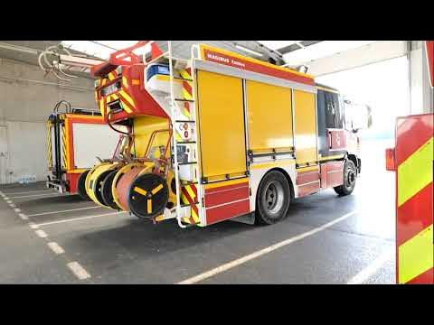
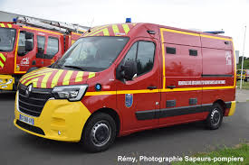
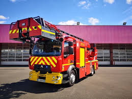
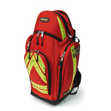

Mon engagement chez les pompiers
Je suis sapeur-pompier volontaire dans les Côtes-d'Armor, au centre de secours de Rostrenen.
Pendant 4 ans, depuis la troisième, je me suis engagé en tant que Jeune Sapeur-Pompier, ce qui impliquait que je devais aller tous les samedis matin de 8h30 à 12h30 à la caserne afin de faire 2 heures de sport (collectifs ou renforcement musculaire), puis 2 heures de théorie pompiers ou de manœuvres (entraînement consistant à reproduire une situation d'incendie réelle afin de l'éteindre).
À l'issue de ces 4 ans, j'ai dû passer le brevet des JSP, dans lequel il y avait une épreuve sportive et des manœuvres à réaliser. Après l'avoir obtenu, j'ai pu m'inscrire dans ma caserne pour intégrer les rangs et devenir 4ème en ambulance.
Aujourd'hui je participe aux interventions et je continue à développer mes compétences dans le secours à la personne. Je passerai bientôt une deuxième formation de secours plus avancée qui me permettra de passer 3ème (équipier) en ambulance.
Ci-dessous une description des engins et matériels indispensables aux pompiers :




Je compte bien continuer dans cette voie malgré la difficulté de coordination de planning entre les études et les gardes. Mon rêve serait de pouvoir travailler en tant qu'ingénieur pour les pompiers afin d'associer mes deux passions.
Suivez le département et la caserne : Vidéo de présentation Twitter Sdis 22